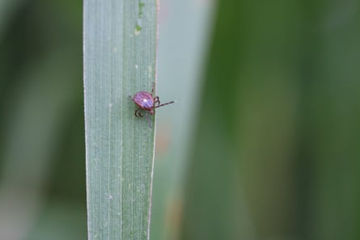

Blood-sucking ticks that trigger a bizarre allergy to meat in the people they bite are exploding in number and spreading across the US, to the extent that they could cover the entire eastern half of the country and infect millions of people, experts have warned.
Lone star ticks have taken advantage of rising temperatures by the human-caused climate crisis to expand from their heartland in the south-east US to areas previously too cold for them, in recent years marching as far north as New York and even Maine, as well as pushing westwards .
The ticks are known to be unusually aggressive and can provoke an allergy in bitten people whereby they cannot eat red meat without enduring a severe reaction, such as breaking out in hives and even the risk of heart attacks. The condition, known as alpha-gal syndrome , has proliferated from just a few dozen known cases in 2009 to as many as 450,000 now.
“We thought this thing was relatively rare 10 years ago but it’s become more and more common and it’s something I expect to continue to grow very rapidly,” said Brandon Hollingsworth, an expert at the University of South Carolina who has researched the tick’s expansion .
“We’ve seen an explosive increase in these ticks, which is a concern. I imagine alpha-gal will soon include the entire range of the tick, which could become the entire eastern half of the US as there’s not much to stop them. It seems like an oddity now but we could end up with millions of people with an allergy to meat.”
The exact number of alpha-gal cases is unclear due to patchy data collection but it’s likely to be a severe undercount as people may not link their allergic reaction to the tick bites. The Centers for Disease Control and Prevention (CDC) has said around 110,000 cases have been documented since 2010 but acknowledges the true number could be as high as 450,000.
Cases will rise further as the ticks spread, aided by their adaptability to local conditions, according to Laura Harrington, an entomologist and disease specialist at Cornell University. “With their adaptive nature and increasing temperatures, I don’t see many limits to these ticks over time,” she said.
A female lone star tick, or Amblyomma americanum collected in Maryland on 21 Jun 2017.Photograph: BSIP/Universal Images Group/Getty Images
Alpha-gal is a confounding condition because it doesn’t cause an immediate allergic reaction, unlike a peanut allergy, with symptoms often appearing several hours after consuming meat. The syndrome is not caused by a pathogen but spurs an allergy to a sugar molecule found in mammals and an array of other things, from toothpaste to medical equipment. Researchers think the condition can wane over time but is also worsened by further tick bites.
This leads to a confusing and fraught experience for the growing number of Americans with alpha-gal, who are now girding for another expected hot summer full of ticks. “The ticks are rampant this year, I’ve pulled 10 ticks off me this season alone, it feels like they are uncontrollable at the moment,” said Heather O’Bryan, a horticulturist in Roanoke, Virginia, who has alpha-gal. “They are so disgusting. I’m not afraid of a lot, but I’m afraid of ticks.”
In 2019, O’Bryan suffered full body hives and struggled to breathe after eating a pork sausage. “It was terrifying experience, I didn’t know I had an allergy but it almost killed me,” she said. She now avoids products containing mammal-derived elements, such as certain toothpastes and even toilet paper, due to adverse reactions.
Dairy, another mammalian product, is also off limits. “I’ve learned what I can eat now, but I was so sad when I realized I couldn’t have pizza again, I remember crying in front of a frozen pizza in the supermarket aisle,” she said.
There is now an “almost constant” stream of new members to the Facebook alpha-gal support groups that O’Bryan is part of, she said, with her region of Virginia now seemingly saturated by the condition. “Everyone knows someone who has it, I talk a friend off a ledge once a month when they’ve been bitten because they are so afraid they have it and are freaking out,” she said.
Lone star ticks are aggressive and can speedily follow a human target if they detect them. “They will hunt you, they are like a cross between a lentil and a velociraptor,” said Sharon Pitcairn Forsyth, a conservationist who lives in the Washington DC area.
A particular horror is the prospect of brushing up against vegetation containing a massed ball of juvenile lone star ticks, know as a “tick bomb”, that can deliver thousands of tick bites. “They are so tiny you can’t see them but you have to take it seriously or you’ll never get them off you,” said Forsyth, who now carries around a lint roller to remove such clusters.
After being diagnosed with alpha-gal, Forsyth set up online resources about the condition to help spread awareness and advocate for better food labeling to include alpha-gal warnings. “I get calls from doctors asking questions about this because they just don’t know about it ,” she said. “I’m not a medical professional, so I just send them the research papers.”
As the climate heats up, due to the burning of fossil fuels, ticks are able to shift to areas that are becoming agreeably warm for them. Growing numbers of deer, which host certain ticks, and sprawling housing development into natural habitats is also causing more interactions with ticks. “Places where houses push up against habitats and parks where nature has regrown are where we are seeing cases,” said Hollingsworth.
But much is still unknown, such as why lone star ticks, which have long been native to the US, suddenly started causing these allergic reactions. Symptoms can also be alarmingly varied – Forsyth said she rarely eats out now because of concerns of contamination in the food and even that alpha-gal could be carried to her airborne, via the steam of cooked meat.
“Some people are scared to leave the house, it’s hard to avoid,” she said. “Many people who get it are over 50, so the first symptom some of them have is a heart attack.”
So how far can alpha-gal spread? Cases have been found in Europe and Australia , although in low numbers, while in the US it’s assumed lone star ticks won’t be able to shift west of the Rocky mountains. But other tick species might also be able to spread alpha-gal syndrome – a recent scientific paper found the western black legged tick and the black legged tick, also called the deer tick, could also cause the condition.
Hanna Oltean, an epidemiologist at Washington state department of health, said it was “very surprising” to find a case of alpha-gal in Washington state from a person bitten by a tick locally, suggesting the western black legged tick could be a culprit.
“The range is spreading and emerging in new areas so the risk is increasing over time,” Oltean said. “Washington state is very far from the range and the risk remains very low here. But we don’t know enough about the biology of how ticks spread the syndrome.”
The spread of alpha-gal comes amid a barrage of disease threats from different ticks that are fanning out across a rapidly warming US. Powassan virus, which can kill people via an inflammation of the brain, is still rare but is growing, as is Babesia, a parasite that causes severe illnesses. Lyme disease, long a feature of the US north-east, is also burgeoning .
“We are dealing with a lot of serious tick-borne illnesses and discovering new ones all the time,” said Harrington.
“There’s a tremendous urgency to confront this with new therapies but the problem is we are going backwards in terms of funding and support in the US. There have been cuts to the CDC and NIH (National Institutes of Health) which means there is decreasing support. It’s a major concern.”